Inline Engine Motion Analysis

Introduction
The straight or inline engine is an internal combustion engine where all cylinders are arranged in a single row with no offset. It is commonly found in four-cylinder, six-cylinder, and eight-cylinder configurations, and is used in automobiles, locomotives, and aircraft. Compared to horizontally opposed or V-shaped engines, an inline engine is less complicated to build because the cylinder bank and crankshaft can be milled from a single metal casting, and fewer cylinder heads and camshafts are required. Additionally, inline engines are more compact than radial engines and can be mounted in any direction. Straight engines are also simpler in design than their V-shaped counterparts.
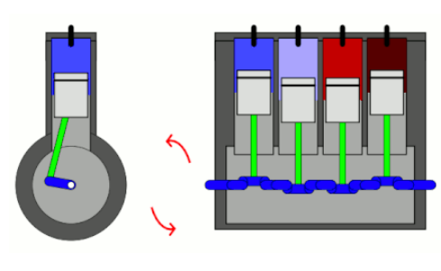Objectives
Performing kinematic analysis of an inline engine and comparing results using SolidWorks and MATLAB in a case study.
Inline Engine Mechanism
Crank-slider mechanism is the main mechanism in inline engine. This mechanism is used to convert rotational motion into a reciprocating linear motion and vice versa. This mechanism is mainly composed of three important parts:
Crank: a rotating disk
Slider: slides on a guided plane
-
Connecting rod which joins the crank and the slider
The slider (piston) is pushed down from the top dead center (TDC) to the bottom dead center (BDC) due to expansion of compressed air inside the cylinder. TDC and BDC are the extreme positions in which the crank and the connecting rod become co-linear. The distance between TDC and BDC called path length. This linear motion of the piston is converted to a rotational motion by the mechanism and then transferred to the common crank shaft.
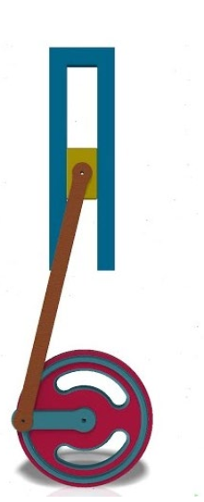Kinematic Model Equations
-
Nomenclature
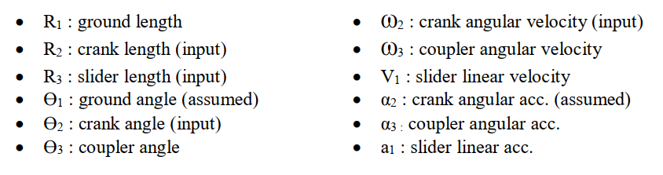 -
Kinematic Diagram
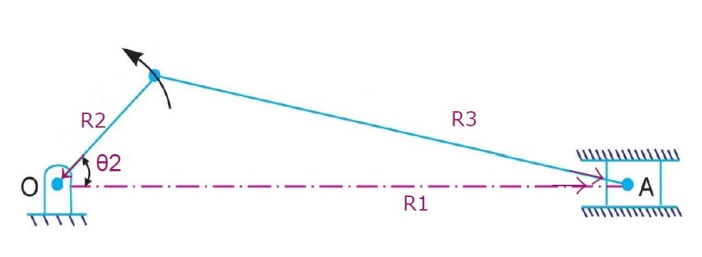 -
Degree of Freedom
Number of links (L): 4
Number of Revolute Joints (R): 3
-
Number of Prismatic Joints (P): 1
Number of Helical Joints (H): 0
DoF = 3 * ( L - 1 ) - 2 R - 2 P - H
DoF = 3 * ( 4 - 1 ) - 2 * 3 - 2 * 1 - 0 = 1 (One actuator is needed.)
-
Position Analysis
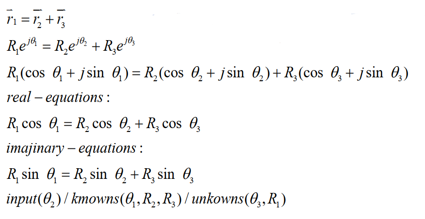 -
Velocity Analysis
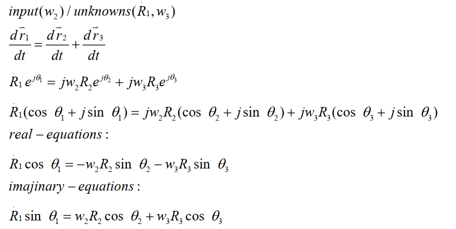 -
Acceleration Analysis
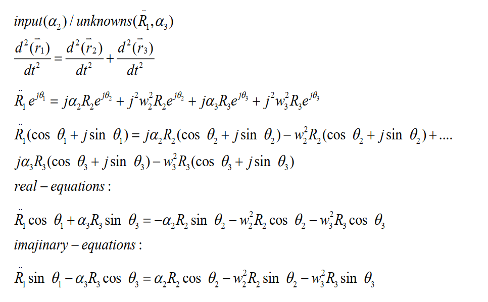
Case Study
The case that we studied is one of the two extreme positions of the mechanism. When the crank and coupler are collinear as shown in the following figure.
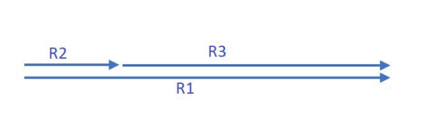-
Assumptions
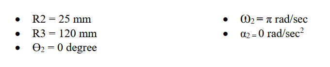 -
MATLAB Results
A MATLAB program was built with the following GUI:
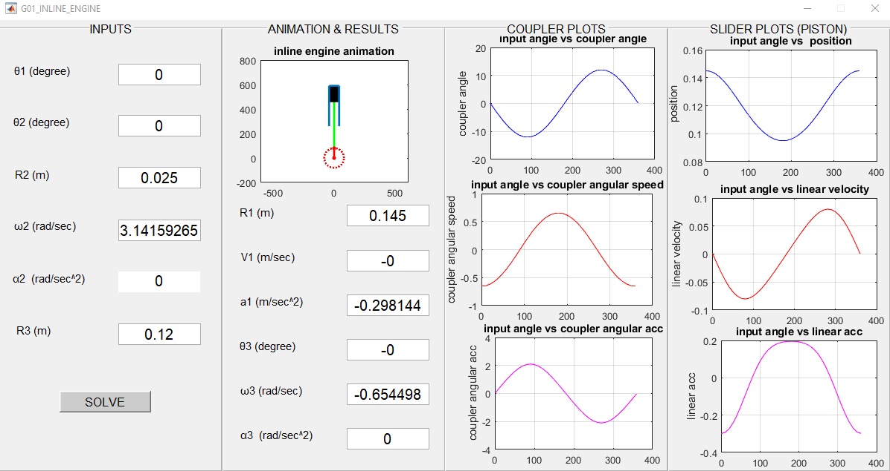-
Position Analysis
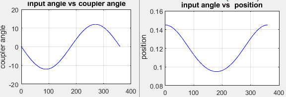 -
Velocity Analysis
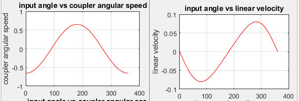 -
Acceleration Analysis
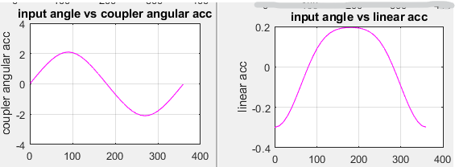
-
-
SolidWorks Results
A 3D model of an inline engine was created and used for motion study.
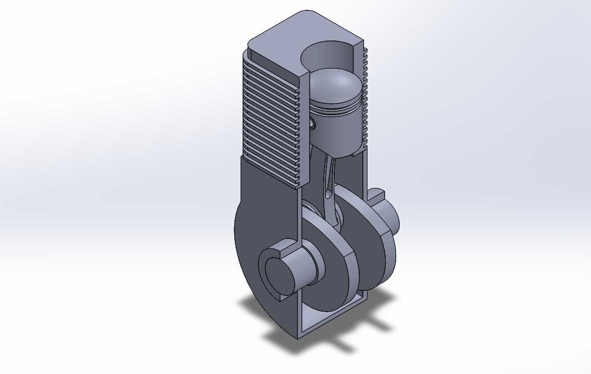Note: Solidworks can only plot specific variable versus time.
-
Position Analysis
-
Slider (Piston)
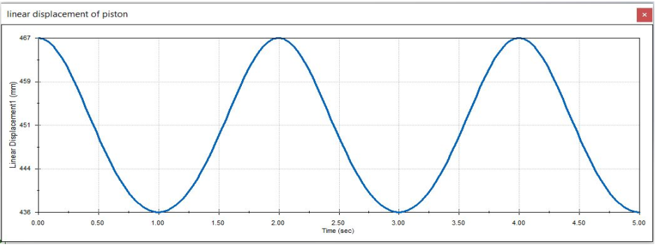 -
Coupler
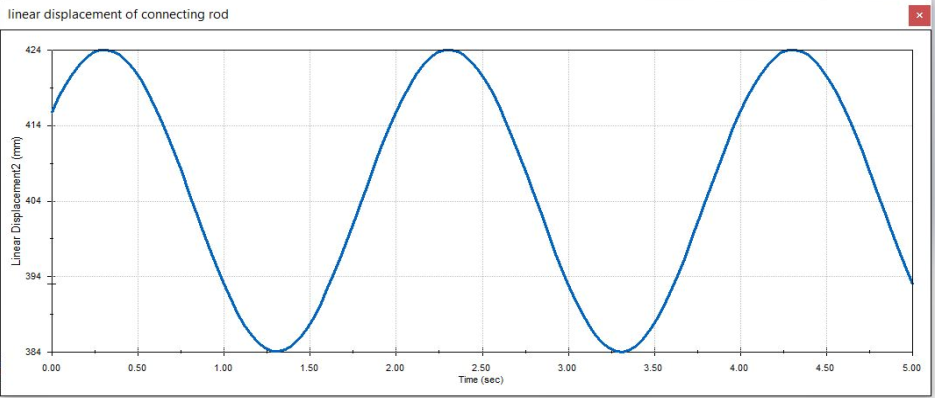 -
Velocity Analysis
-
Slider (piston)
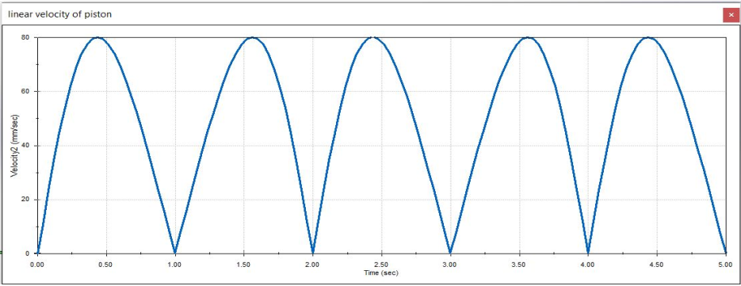 -
Coupler
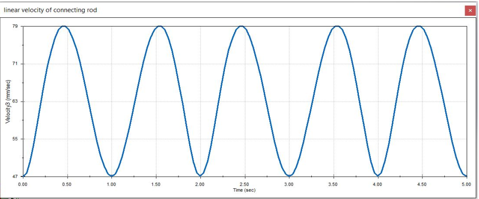 Acceleration Analysis
-
Slider (piston)
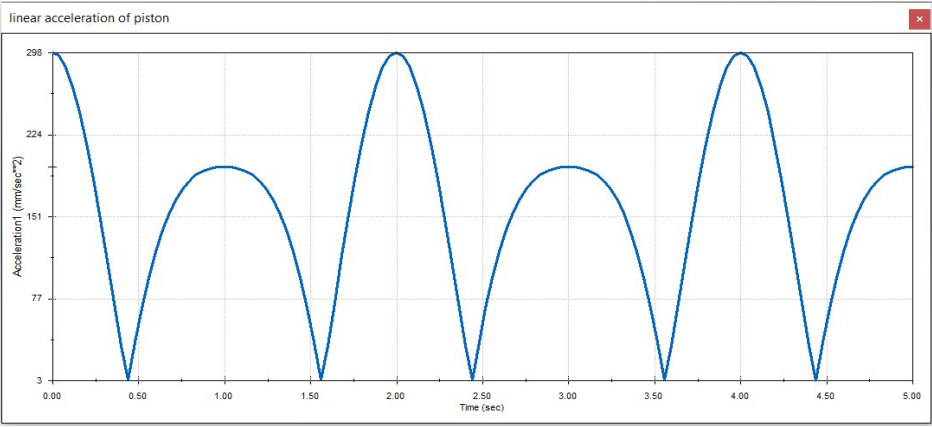 -
Coupler
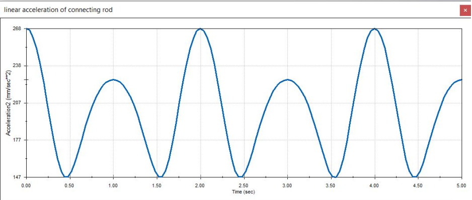
-
-
SolidWorks Vs MATLAB
Position analysis cannot be used for comparison as the reference point differs between the two models. In contrast, velocity and acceleration are not dependent on reference point. we assumed that the motion started at (the extreme position) θ2 = 0, t = 0. After 2 seconds of motion, we can calculate the instantaneous crank angle as we know the angular velocity and the angular acceleration are zero. And we will compare the results at this instant. (t = 2 sec, θ = 2π rad = 360 degree).
Velocity
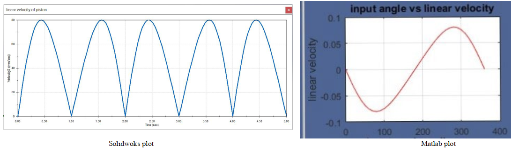
Acceleration
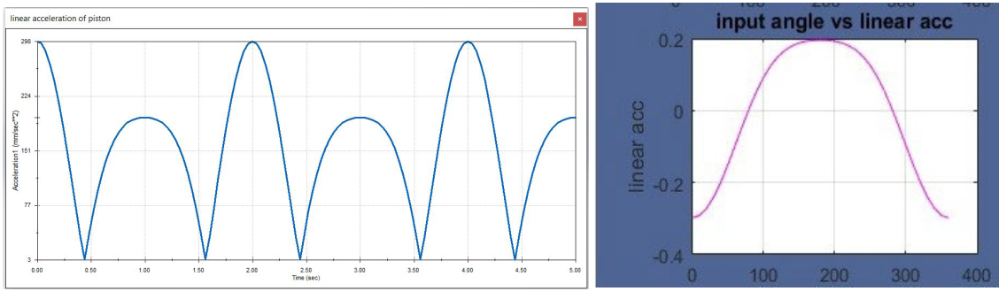
As shown in the figure, the velocity is zero at t=2sec (angle = 360 deg) in both models.
As show in the figure, the acceleration magnitude is (298 mm/sec^2) at t = 2sec (angle = 360 deg) in both models.
Conclusion
The crank slider mechanism is a simple and efficient mechanism that is widely used in various applications such as inline engines, rotary engines, oscillating cylinder engines, hand pumps, and more. It provides a one-degree-of-freedom mechanism, and its kinematic equations can be easily solved and simulated using different software. We have used Matlab and Solidworks to model this mechanism and both have generated different plots. The Matlab plots depict the kinematic relationships between the slider and the input crank angle, as well as between the coupler and the input angle of the crank. On the other hand, the Solidworks plots only show the kinematic relation versus time. We have compared the plots generated by both software programs in a specific case study and found that they were similar, as described in the comparison section.
Check the project on GitHub